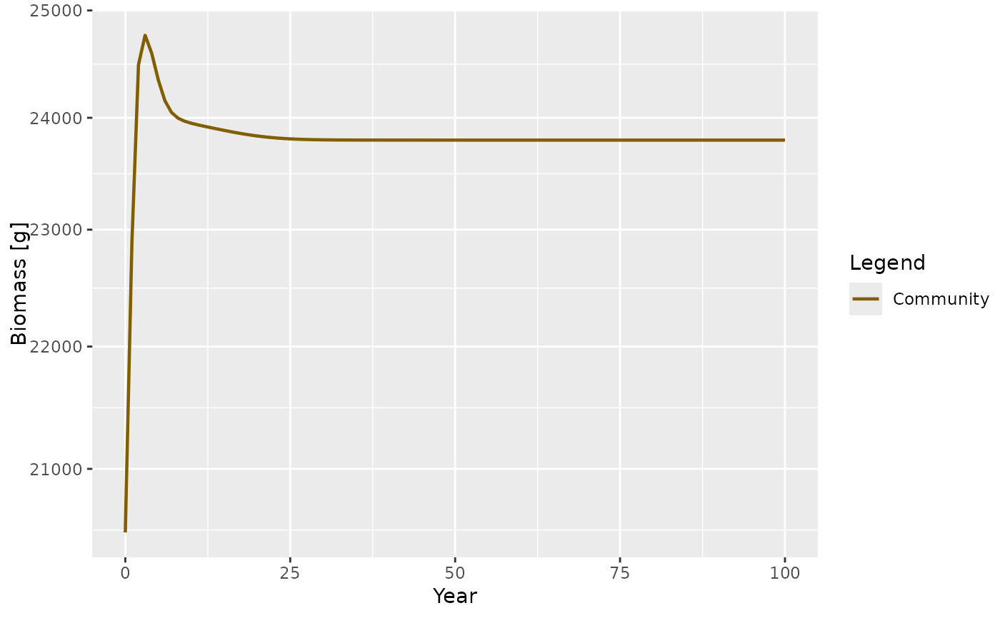
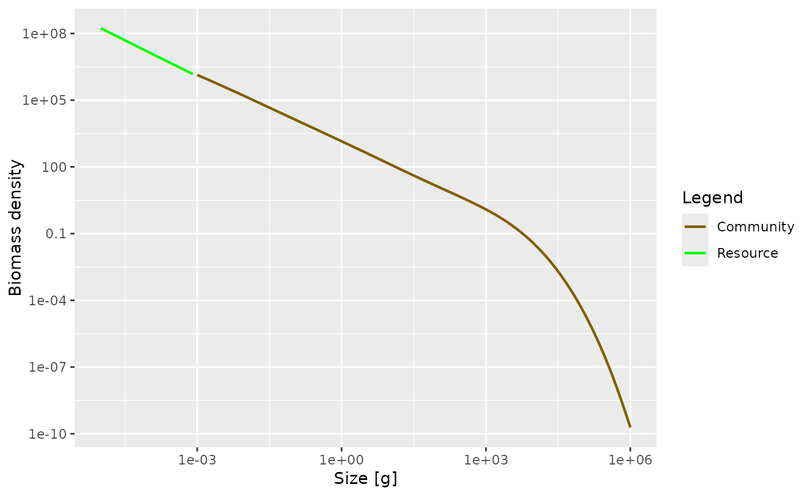

Deprecated function for setting up parameters for a community-type model
Source:R/deprecated.R
set_community_model.Rd![[Deprecated]](figures/lifecycle-deprecated.svg)
This function has been deprecated in favour of the function
newCommunityParams() that sets better default values.
Usage
set_community_model(
max_w = 1e+06,
min_w = 0.001,
min_w_pp = 1e-10,
z0 = 0.1,
alpha = 0.2,
h = 10,
beta = 100,
sigma = 2,
q = 0.8,
n = 2/3,
kappa = 1000,
lambda = 2 + q - n,
f0 = 0.7,
r_pp = 10,
gamma = NA,
knife_edge_size = 1000,
knife_is_min = TRUE,
recruitment = kappa * min_w^-lambda,
rec_mult = 1,
...
)Arguments
- max_w
The maximum size of the community. The
w_infof the species used to represent the community is set to this value. The default value is 1e6.- min_w
The minimum size of the community. Default value is 1e-3.
- min_w_pp
The smallest size of the resource spectrum.
- z0
The background mortality of the community. Default value is 0.1.
- alpha
The assimilation efficiency of the community. Default value 0.2
- h
The maximum food intake rate. Default value is 10.
- beta
The preferred predator prey mass ratio. Default value is 100.
- sigma
The width of the prey preference. Default value is 2.0.
- q
The search volume exponent. Default value is 0.8.
- n
The scaling of the intake. Default value is 2/3.
- kappa
The carrying capacity of the resource spectrum. Default value is 1000.
- lambda
The exponent of the resource spectrum. Default value is 2 + q - n.
- f0
The average feeding level of individuals who feed on a power-law spectrum. This value is used to calculate the search rate parameter
gamma(see the package vignette). Default value is 0.7.- r_pp
Growth rate parameter for the resource spectrum. Default value is 10.
- gamma
Volumetric search rate. Estimated using
h,f0andkappaif not supplied.- knife_edge_size
The size at the edge of the knife-selectivity function. Default value is 1000.
- knife_is_min
Is the knife-edge selectivity function selecting above (TRUE) or below (FALSE) the edge. Default is TRUE.
- recruitment
The constant recruitment in the smallest size class of the community spectrum. This should be set so that the community spectrum continues the resource spectrum. Default value =
kappa*min_w^-lambda.- rec_mult
Additional multiplier for the constant recruitment. Default value is 1.
- ...
Other arguments to pass to the
MizerParamsconstructor.
Value
An object of type MizerParams
Details
This functions creates a MizerParams object so that
community-type models can be easily set up and run. A community model has
several features that distinguish it from the food-web type models. Only one
'species' is resolved, i.e. one 'species' is used to represent the whole
community. The resource spectrum only extends to the start of the community
spectrum. Recruitment to the smallest size in the community spectrum is
constant and set by the user. As recruitment is constant, the proportion of
energy invested in reproduction (the slot psi of the returned
MizerParams object) is set to 0. Standard metabolism has been turned
off (the parameter ks is set to 0). Consequently, the growth rate is
now determined solely by the assimilated food (see the package vignette for
more details).
The function has many arguments, all of which have default values. The main
arguments that the users should be concerned with are z0,
recruitment, alpha and f0 as these determine the average
growth rate of the community.
Fishing selectivity is modelled as a knife-edge function with one parameter,
knife_edge_size, which determines the size at which species are
selected.
The resulting MizerParams object can be projected forward using
project() like any other MizerParams object. When projecting
the community model it may be necessary to keep a small time step size
dt of around 0.1 to avoid any instabilities with the solver. You can
check for these numerical instabilities by plotting the biomass or abundance
through time after the projection.
References
K. H. Andersen,J. E. Beyer and P. Lundberg, 2009, Trophic and individual efficiencies of size-structured communities, Proceedings of the Royal Society, 276, 109-114
Examples
# \donttest{
params <- set_community_model(f0=0.7, z0=0.2, recruitment=3e7)
#> Warning: `set_community_model()` was deprecated in mizer 2.0.0.
#> ℹ Please use `newCommunityParams()` instead.
#> Note: No m column in species data frame so using m = 1.
#> Warning: For the species Community the value for `w_mat` is not smaller than that of `w_max`. I have corrected that by setting it to 25% of `w_max.
#> Warning: For the species Community the value for `w_mat` is not smaller than that of `w_max`. I have corrected that by setting it to 25% of `w_max.
# This is now achieved with
params <- newCommunityParams(f0 = 0.7, z0 = 0.2)
sim <- project(params, effort = 0, t_max = 100, dt=0.1)
plotBiomass(sim)

plotSpectra(sim)

# }